되돌아오는 활력! 365일 막힘없는 기운
"세계 유일 루버스오일 100%"
-
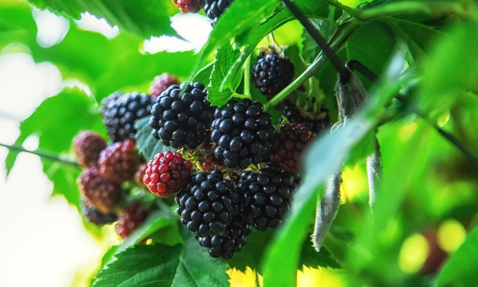
뿌리처럼 강한나무처럼,
건강도 깊은 곳에서 회복됩니다. -
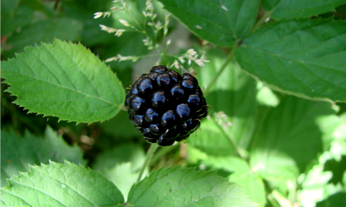
한 여름 태양을 머금은
작은 열매 하나다,
활력으로 피어납니다. -
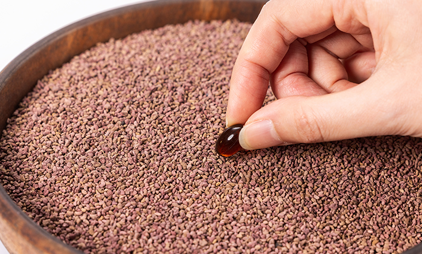
뿌리처럼 강한나무처럼,
건강도 깊은 곳에서 회복됩니다.
건강을 되돌리는 힘! 순도 100% 루버스오일!
아무것도 첨가하지 않은 순수한 에너지를 선사합니다.
불필요한 첨가 없이 자연 그대로의 힘을 담아냈습니다.
루버스오일은 태양의 선물 복분자씨앗에서 추출한
순도 100% 새로운 건강 원료입니다.
자연이 주는 최고의 황금 비율 1:1.8
루버스오일에 함유된 오메가3 오메가6의 함유비율
몸의 흐름을 건강하게 관리하는데 도움을 줍니다
더 맑고, 더 깨끗하고, 더 힘차게!
루버스오일은
몸의 흐름을 생각한 100% 국내산 원료 입니다.
건강한 컨디션 관리를 위한 선택

전세계 유일 100% 루버스오일 특허기술
회복의 힘을 증명하는 특허 기술
“RUBUS COREANUS OIL”
- 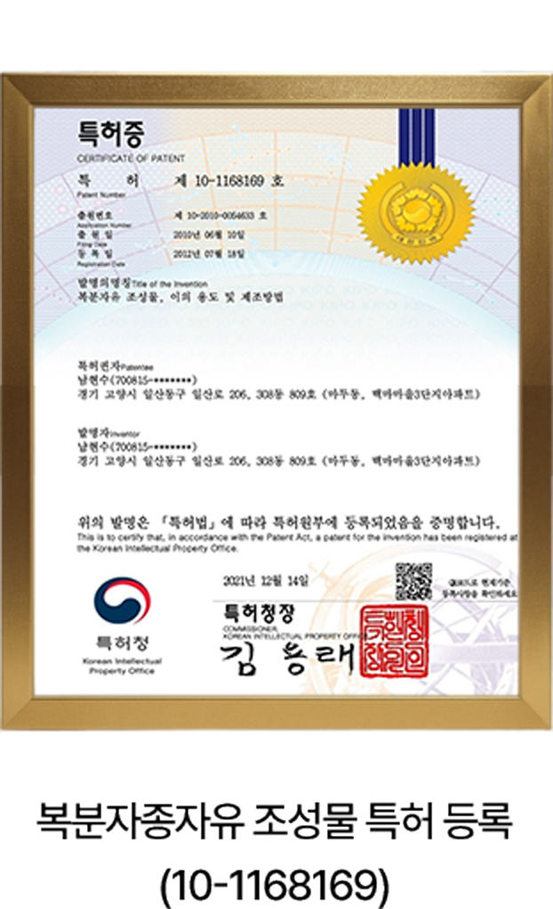
- 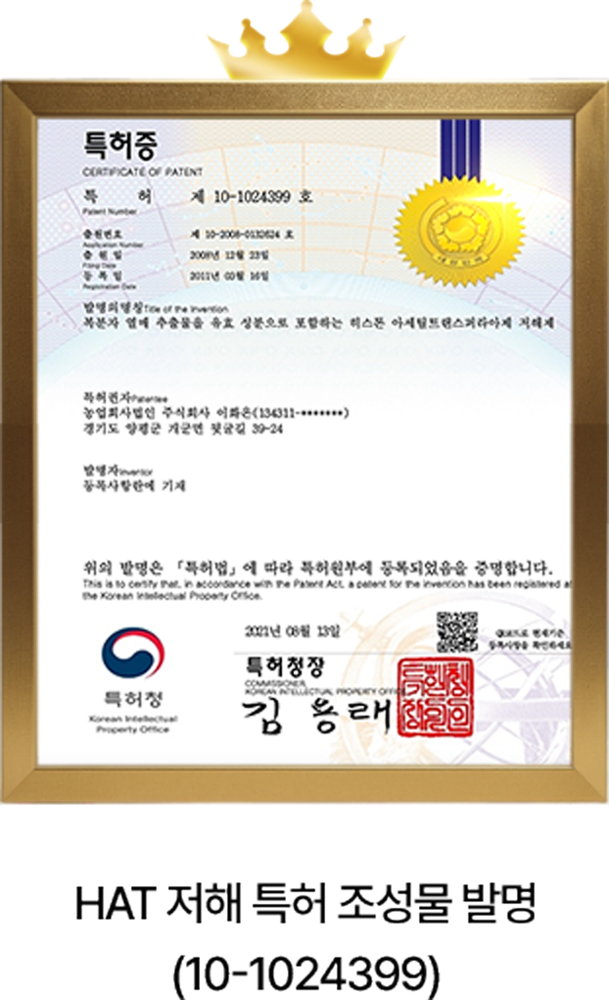
- 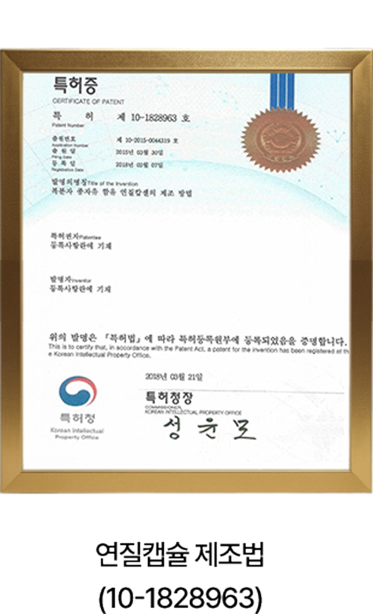
몸의 흐름이 원활하지 않으면, 활력도 떨어집니다.
더복력은 특허받은 원료, 임상연구로 안전성이 확인된
RUBUS coreanus oil(복분자 종자유)로 만들어졌습니다.
“되돌아오는 활력을 한 알에 담았습니다.”
건강은 알아보는 것이 아니라, 시작하는 것입니다.
활력을 깨우는 더복력의 신비한 힘
몸이 보내는 작은 신호들, 이제는 관리할 때입니다.
- 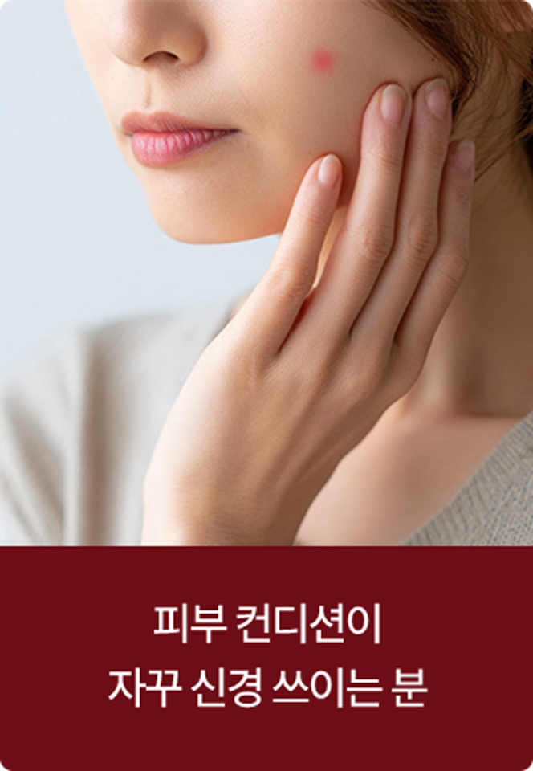
- 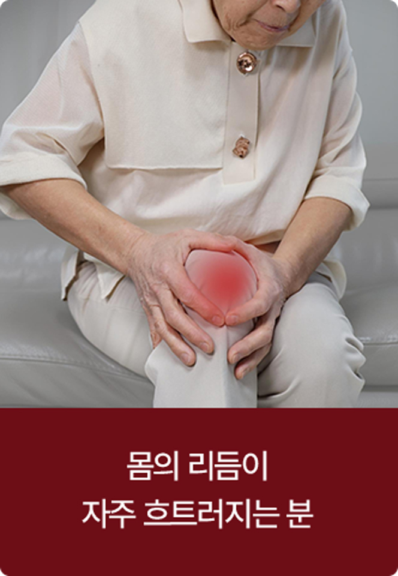
가벼워지는 아침, 편안해지는 저녁을 경험해 보세요.
“더복력 덕분에 다시 깨어난 느낌이에요”
- 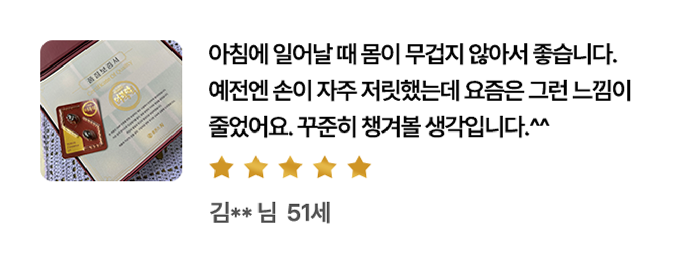
- 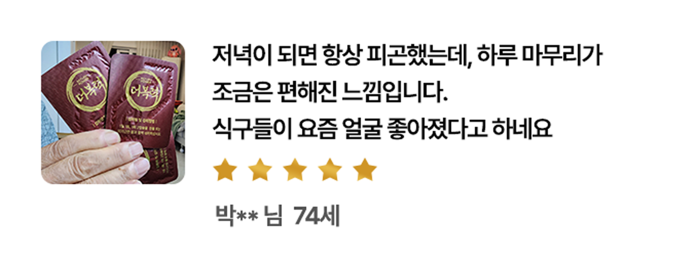
- 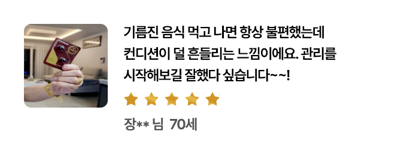
- 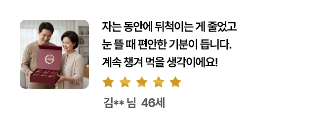
더복력은 GMP 인증을 받은
위생적인 제조 시설에서 안전하게 생산됩니다.
저온 압착 방식을 적용하여 불필요한 첨가물 없이
원료의 특성을 그대로 살렸습니다.
제조원 : 농업법인회사㈜이화온
되돌아오는 활력! 365일 막힘없는 기운
몸의 활력과 흐름이 예전과 같지 않다면,
지금이 시작할 때입니다.
RETURN POWER 더복력으로 삶을 즐겁게,
세상을 풍요롭게